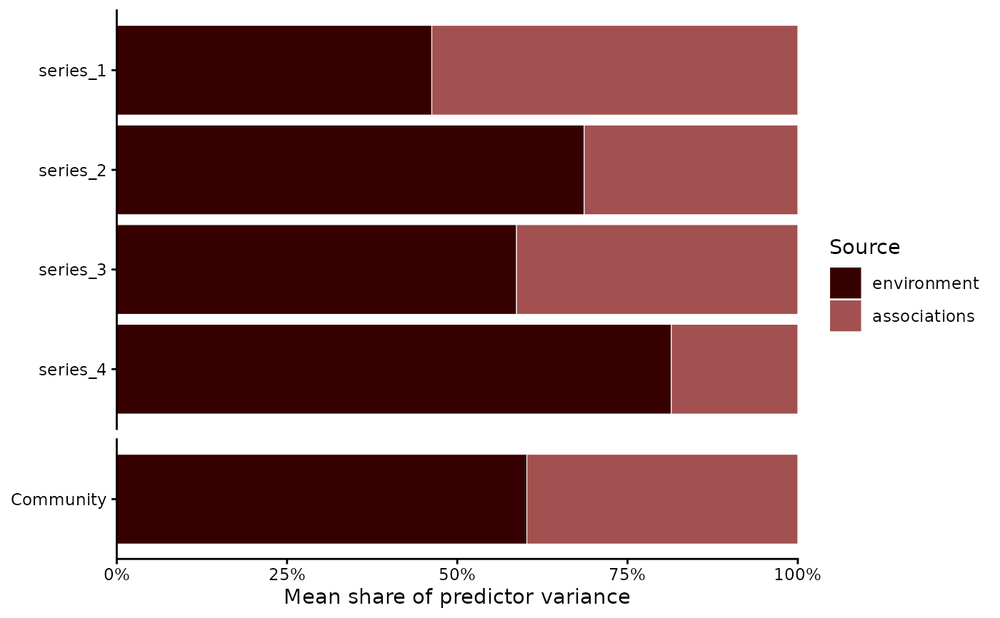

Partition each series' predictor variance among its sources
Source:R/variance_partition.R
variance_partition.RdShows what moves each series: its covariates, the latent factors it shares with other series, its own trend, its season and, in a detection model, its detection process. Each source's share of the variance is computed draw by draw, which gives every share a posterior distribution.
Usage
variance_partition(object, ...)
# S3 method for class 'mvgam'
variance_partition(
object,
...,
ndraws = NULL,
draw_ids = NULL,
scale = c("link", "expected"),
resp = NULL
)
# S3 method for class 'mvgam_variance_partition'
summary(object, probs = c(0.025, 0.975), ...)
# S3 method for class 'mvgam_variance_partition'
print(x, digits = 2L, ...)
# S3 method for class 'mvgam_variance_partition'
plot(x, ...)Arguments
- object
A fitted
mvgamobject.- ...
Unused. Anything passed here is refused.
- ndraws, draw_ids
The posterior draws to use, as
hindcast.mvgam()takes them.NULLfor both uses every draw.- scale
"link"(the default) partitions the predictor, where its parts add."expected"partitions the expected value: a source's values are the expected value less the expected value without that source.- resp
The response to report, needed on a model with several.
- probs
Interval probabilities of the table. Defaults to
c(0.025, 0.975).- x
An
mvgam_variance_partitionobject fromvariance_partition().- digits
Number of decimal places to print. Defaults to
2.
Value
An object of class mvgam_variance_partition. print() gives
the mean share of each source by series. summary() returns a
tibble of each share's median and interval. plot() draws one
stacked bar per series and one for the community.
Details
Sources. Each source is a sum of parts of the fitted predictor:
environmentevery term of the observation and trend formulas, group-level terms included
associationsthe latent factors, shared across series
trenda latent state belonging to its series alone
seasonthe season of an
LLT()trenddetectionthe terms of an
occ()ornmix()detection formula,p ~ ..., on that formula's own link scale. It joinsscale = "link"alone.
A source a model lacks or that never varies is left out.
A diri(), multi() or categ() fit gives each species' share
through a softmax, which ignores a shift every species at a site
shares. Each source is centred across the species at each site, the
centred log-ratio scale. A covariate with one slope for every species
then moves no share and is left out.
Under a non-linear link, scale = "expected" holds the other sources
at their fitted values. Its sources then interact, as a covariate's
effect on a count grows with the level.
Shares. A source's share is the variance of its values over the fitted rows of a series, divided by the sum of those variances across sources. Covariances between sources are left out. They would give a negative share to a source that offsets another. Observation noise is left out too: the shares describe the predictor, on a scale every family has. A series whose predictor never moves has no share.
A series row reports what moves that series over its own rows. An effect that differs only between series, such as a covariate measured once per site, has no variance there. The community row pools every row and counts those effects.
See also
residual_cor() for the associations between series,
seasonality() for the season, bayes_R2() for the share of the
response's variance the predictor explains,
forecast_uncertainty() for the variance of a forecast
Examples
# \dontrun{
set.seed(4)
simdat <- sim_mvgam(family = poisson(), n_series = 4L,
n_timepoints = 80L, trend_model = AR())
mod <- mvgam(
y ~ s(x, k = 5),
trend_formula = ~ AR(p = 1, n_lv = 2),
data = simdat$data_train,
family = poisson(),
chains = 2,
silent = 2
)
#> Warning: 34 of 2000 (2.0%) transitions ended with a divergence.
#> See https://mc-stan.org/misc/warnings for details.
# The covariate's share against the shared factors', by series
vp <- variance_partition(mod)
vp
#> Share of predictor variance by source, 2000 draws
#>
#> environment associations
#> series_1 0.46 0.54
#> series_2 0.69 0.31
#> series_3 0.59 0.41
#> series_4 0.81 0.19
#> Community 0.60 0.40
plot(vp)

# Each share with its posterior interval
summary(vp)
#> # A tibble: 10 × 5
#> series source Q50 Q2.5 Q97.5
#> <chr> <chr> <dbl> <dbl> <dbl>
#> 1 series_1 environment 0.464 0.351 0.571
#> 2 series_1 associations 0.536 0.429 0.649
#> 3 series_2 environment 0.683 0.520 0.874
#> 4 series_2 associations 0.317 0.126 0.480
#> 5 series_3 environment 0.585 0.464 0.719
#> 6 series_3 associations 0.415 0.281 0.536
#> 7 series_4 environment 0.817 0.658 0.945
#> 8 series_4 associations 0.183 0.0551 0.342
#> 9 Community environment 0.603 0.525 0.672
#> 10 Community associations 0.397 0.328 0.475
# }